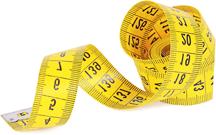

कभी नहीं आजमाया होगा
आपकी कीटो डाइट
 वजन घटाने के लिए घटक
वजन घटाने के लिए घटकजब शरीर को कार्बोहाइड्रेट से ऊर्जा नहीं मिलती है, तो यह 7-10 दिनों के बाद कीटोसिस की स्थिति में प्रवेश कर जाती है। कार्बोहाइड्रेट की कमी से आपकी उपचर्म वसा ऊर्जा में बदल जाती है।लिवर में बनने वाले कीटोन बॉडी कीटोसिस के दौरान मस्तिष्क के लिए ऊर्जा का मुख्य स्रोत होते हैं। वे मांसपेशियों के ऊतकों को ऊर्जा पहुंचाते हैं और वसा के जमाव को रोकते हैं।नतीजतन, वसा का स्थिर जमाव गायब हो जाता है, और आपके शरीर का आकार कम हो जाता है।
Keto Extreme
- कार्ब का सेवन कम से कम करता है
- ब्लड शुगर के स्तर को कम करता है
- इंसुलिन का उत्पादन करने की आवश्यकता नहीं है
- इंसुलिन नहीं - भूख का एहसास नहीं

Keto Extreme कैसे काम करता है

कीटोसिस प्राप्त करने में आपके शरीर को 7 से 10 दिन लगते हैं।
केवल 1 Keto Extreme टैबलेट इस समय को कम करके 40-50 मिनट तक कर देता है, जिस दौरान शरीर पर्याप्त मात्रा में कीटोन बॉडी का उत्पादन करता है और संचित वसा कोशिकाओं को संसाधित करना शुरू कर देता है और ऊर्जा बना देता है।
Keto Extreme की सक्रिय सामग्रियां
विटामिन बी6 (पाइरिडॉक्सिन)
हीमोग्लोबिन के संश्लेषण में भाग लेता है और एसआईआरटी जीन को सक्रिय करता है जिसे पतलापन का जीन भी कहा जाता है
गाबा γ-अमीनोब्यूट्रिक एसिड
कार्बोहाइड्रेट चयापचय के लिए जिम्मेदार हार्मोन का उत्पादन बढ़ाता है, जिससे चयापचय में तेजी आती है। इसके अलावा, अमीनोब्यूट्रिक एसिड घबराहट, चिंता को कम करता है और नींद की गुणवत्ता में सुधार लाता है।
विटामिन बी3 (नियासिन)
खून में कोलेस्ट्रॉल के जमाव को कम करता है। जल-नमक चयापचय को बेहतर बनाता है, इस प्रकार सूजन को कम करने और शरीर के आकार को कम करने में मदद करता है
पोटैशियम
जोड़ों को मजबूत करता है; यह शरीर में सभी कोशिकाओं और ऊतकों के कार्यों के लिए जिम्मेदार एक महत्वपूर्ण इलेक्ट्रोलाइट है।
एल-ग्लूटामाइन
कीटोसिस की स्थिति से आप थका हुआ और शून्यमनस्क महसूस करते हैं। एल-ग्लूटामाइन ऊर्जा बढ़ाता है और ध्यान केंद्रित करने में मदद करता है, साथ ही गठीले शरीर को कम किए बिना वजन घटाने को बढ़ावा देता है।
मैगनीशियम
प्रशिक्षण के बाद मांसपेशियों को आराम देता है, जोड़ों के दर्द से राहत देता है और मांसपेशियों की ऐंठन को रोकता है।
महत्वपूर्ण:
विशेषज्ञ Keto Extreme के बारे में क्या कहते हैं:

कीटोसिस की प्रक्रिया में, वसा फैटी एसिड और ग्लिसरीन में टूट जाते हैं, बाद में कीटोन बॉडी में बदल जाते हैं। हालांकि, कीटोसिस केवल तब शुरू होता है जब लिवर और मांसपेशियों के ऊतकों में ग्लाइकोजन की कमी आती है। यह आमतौर पर 7 से 10 दिनों के भीतर होता है। इस प्रक्रिया को, और इस प्रकार वसा जलाने की प्रक्रिया को तेज करने के लिए, मैं अपने रोगियों को Keto Extreme नामक सप्लीमेंट का उपयोग करने की सलाह देती हूं। विटामिन प्रदान करके, भूख को दबाकर और थकान और चिंता को समाप्त करके, यह उत्पाद आपके शरीर का तब समर्थन करता है जब आप कीटो आहार पर होते हैं। लेकिन Keto Extreme का मुख्य लाभ कार्बोहाइड्रेट के अवशोषण को रोकना है, जो आम तौर पर ग्लूकोज (शुगर) में टूट जाता है, रक्तप्रवाह में अवशोषित हो जाता है और वजन बढ़ाता है।
इससे पहले: कीटोन का गंभीर रूप से निम्न स्तर: 0.8 मोल


Keto Extreme का कोर्स लेने के बाद परिणाम: कीटोन्स: 13 मोल

यह मरीज मेरे पास तब आई जब उसका वजन 97 किलो (उसका उच्चतम) था। इससे पहले, उसने कई डाइट और उपवास करने की कोशिश की, जो अल्पकालिक परिणाम प्रदान करते थे और अंततः उसे उसके सामान्य वजन को दोगुने कर देते थे। मैंने उसे हेल्थ स्क्रीनिंग करवाने के लिए कहा। जैसा कि पता चला, उसमें कीटोन का गंभीर रूप से निम्न स्तर था। इसलिए उसका वजन तेजी से बढ़ रहा था। मैंने तुरंत उसे Keto Extreme का एक कोर्स लेने के लिए कहा।
आपका वजन आपके शरीर में कीटोन्स की मात्रा पर निर्भर करता है। ज्यादा कीटोन्स यानि कम बढ़ा हुआ वजन।
यह समय है कि
असुरक्षा से छुटकारा पाएं
ला शरीर पाएं: आपकी महिला मित्र जल उठेंगी, आप पुरुषों के लिए आकर्षक बन जाएंगी...


Keto Extreme
परिणामों को बढ़ाएं
ऑर्डर करें
हम आपके लिए 24/7 काम करते हैं
फ़िर भी मन में सवाल हैं?
हम आपके लिए काम करते हैं
क्या यह शाकाहारियों के लिए उपयुक्त है?
उत्तर छिपाएंकई वजन घटाने वाली गोलियां हार्मोन को प्रभावित करती हैं। Keto Extreme के बारे में क्या?
उत्तर छिपाएंआप कब तक कीटो डाइट पर रह सकते और Keto Extreme ले सकते हैं?
उत्तर छिपाएंक्या आपको कीटो डाइट पर रहना पड़ता है या बस Keto Extreme खाइये और वजन घटाइये?
उत्तर छिपाएं